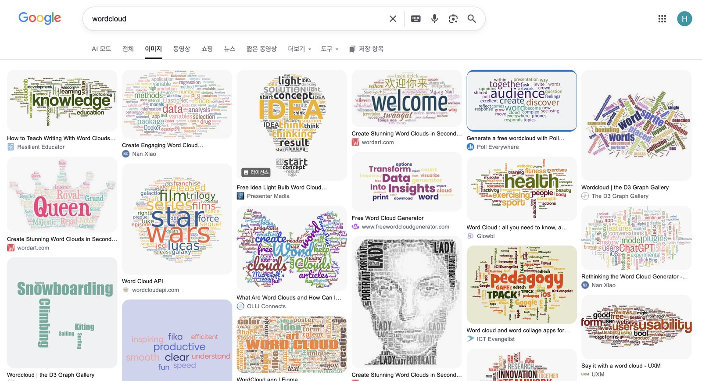
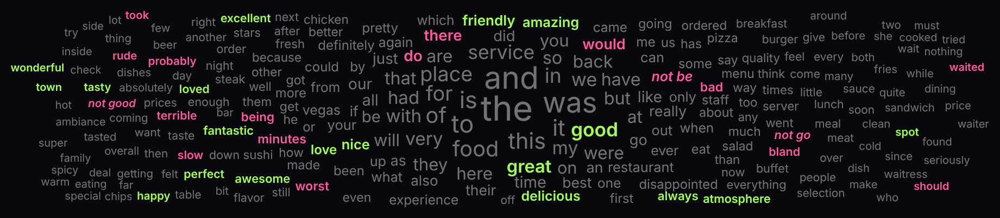
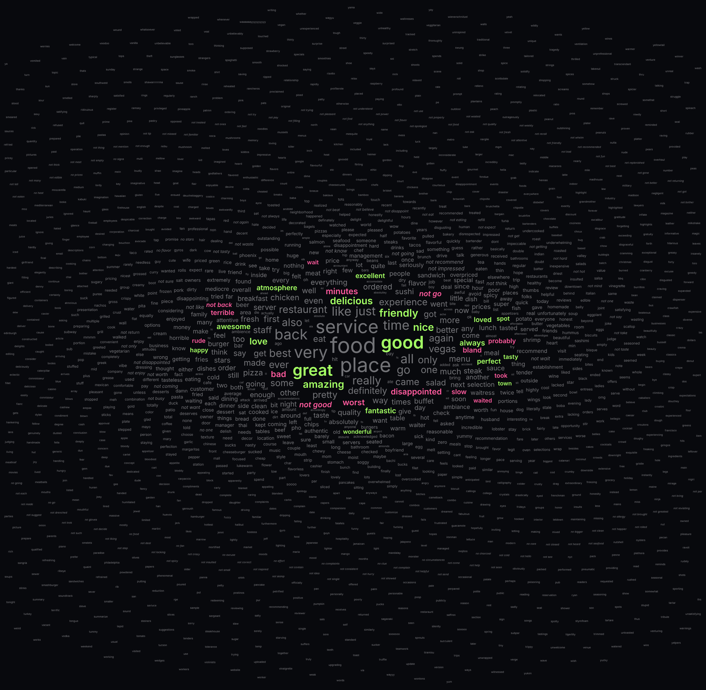
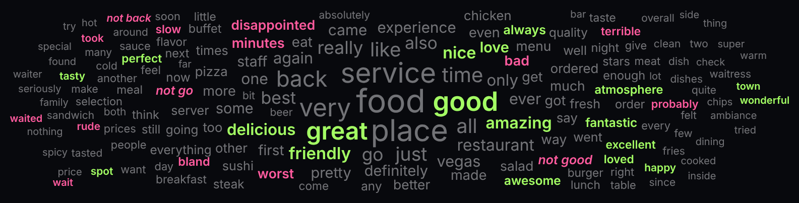
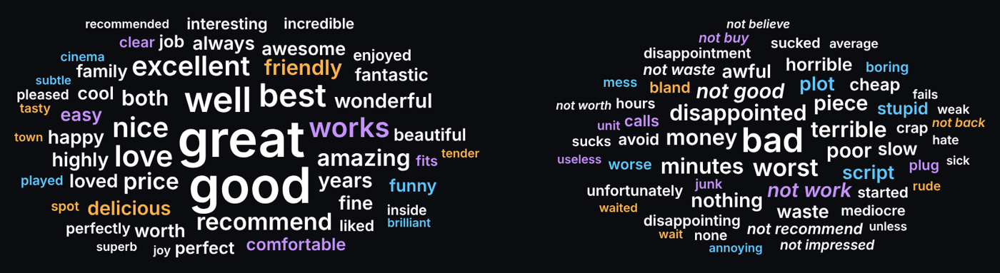

D3.js word cloud workshop
Build a word cloud that shows which words people use to praise and which to complain
3,000 review sentences (Yelp, IMDb, Amazon), one cloud per source. Size = how often; colour = praise or complaint.
0 · Start
Overview
- The methodWhat a word cloud encodes, and its blind spots
- The data3,000 labelled sentences · selecting words · preprocessing
- Our designThree tones · size and layout · our word cloud
- The codeBuild in 6 steps · the key D3 pieces
- Task 1Top-N filtering
- Task 2Source as position
- Wrap-upSummary · check & submit
1 · The method
Word Cloud: Marks and Channels

What it does well
The mark is the word itself and its size is the main channel. You get an overview of a whole text at once, and big or bright words pop out before you search.
What it hides
Position means nothing: words are packed wherever they fit. Long words look bigger at the same count. Cut words leave no trace: most words must be left out, and the reader cannot see how many.
Our cloud prints how many words it leaves out and gives exact counts on hover. Task 2 gives position a job.
2 · The data
Dataset: Three Labelled Sources
restaurant reviews
1,000 sentences · 500 praise · 500 complaints
Crust is not good. ⇥ 0movie reviews
1,000 sentences · 500 praise · 500 complaints
A very, very, very slow-moving, aimless movie about a distressed, drifting young man. ⇥ 0product reviews (phones and accessories)
1,000 sentences · 500 praise · 500 complaints
Good case, Excellent value. ⇥ 1| Item | One sentence taken from a review, in a file per site: the sentence, a tab, then its label |
| Attributes | Text · label: 1 = positive (praise), 0 = negative (complaint) · source: which site (categorical) |
| By design | Each site is balanced 500 : 500, so 50% means "used equally in both" |
Sentence The label belongs to the whole sentence, not to any word: we count how many sentences contain a word.
58% of the 5,069 distinct words appear in one sentence only: a long tail.
2 · The data · Selecting Words
Selecting Words



2 · The data · Preprocessing
Preprocessing
Lowercase, split contractions, keep letters.
the · food · is · not · very · goodAbout 110 grammar words. Without this, the biggest words would be the (1,334 sentences), and, i, a.
food · not · very · goodnot / no / never + the next real word, skipping intensifiers like very. Otherwise "good" is counted in complaints.
food · not goodPer source: sentences with the term in praise and in complaints. Then derive share, tone and the 7-sentence filter.
(praise + 5) ÷ (count + 10)Smoothed share · try it
share = (praise + 5) ÷ (praise + complaint + 10)
Full lists · 113 stop words · 9 skip words
- Articles and determiners 7
- a · an · the · this · that · these · those
- Pronouns 30
- i · me · my · mine · we · us · our · ours · you · your · yours · he · him · his · she · her · hers · it · its · they · them · their · theirs · myself · yourself · himself · herself · itself · ourselves · themselves
- Question words 9
- who · whom · whose · which · what · where · when · why · how
- be · have · do 16
- am · is · are · was · were · be · been · being · have · has · had · having · do · does · did · doing
- Modal verbs 9
- will · would · shall · should · can · could · may · might · must
- Prepositions 25
- of · in · on · at · by · for · with · about · against · between · into · through · during · before · after · above · below · to · from · up · down · out · off · over · under
- Conjunctions 15
- and · or · but · nor · so · yet · if · then · than · because · as · while · until · although · though
- Place 2
- there · here
- Skip words 9
- very · really · too · quite · all · even · ever · much · more — only after not / no / never
Kept on purpose: not, no, never and any word that can carry a judgement. A judgement call: change the list if you disagree.
3 · Our design
Colour: Diverging Palette
| ≥ 70% | praise | great 93% · delicious · excellent | |
| 30–70% | either way | food 49% · movie · phone | |
| ≤ 30% | complaint | minutes 19% · not good · worst |
The data has a meaningful midpoint, 50% (500 : 500 by design), so neutral grey sits there and saturated colours at the ends: a diverging palette.
Colour shows a derived, ordered attribute (tone). Words are small marks, and small regions need high saturation.
A word needs 7 one-sided sentences to reach 70%: that is our filter, and every cloud prints how many words it leaves out.
Also considered · colour for the source (Dining · Film · Tech) instead of tone. For our question, colour for praise and complaint is more direct, so tone got the colour. The other version is the bonus after Task 2.
3 · Our design
Size and Layout
| Channel | Encodes | Because |
|---|---|---|
| Mark | A term, drawn as text | The reader needs the word itself |
| Size | Sentences containing the term, square-root scale, one common scale for all clouds | A magnitude channel for a quantitative attribute; √ keeps area proportional to the count |
| Region | Source: one cloud each, stacked | Small multiples: same encoding, different slice of the data |
| Position | Nothing: the largest word first at the centre, the rest spiral out until they fit | The most effective channel is still free. Task 2 uses it |
3 · Our design
Our Word Cloud
4 · The code
Build in Six Steps
Each step is one function in wordcloud.js. Write your own request to Copilot from the points under Tell Copilot, reload the page, and compare the console with the checkpoint before you go on. Put every number you choose in one CONFIG object at the top of the file.
- 1loadData
- 2toTerms
- 3countTerms
- 4selectTerms
- 5layoutCloud
- 6drawCloud
4 · The code · Step 1 of 6
- 1loadData
- 2toTerms
- 3countTerms
- 4selectTerms
- 5layoutCloud
- 6drawCloud
1 · loadData
loadData() → [{ text, label, source }]
Three text files become one list of items. Each sentence keeps its two attributes: label and source.
Tell Copilot
- the three file paths and a source name for each
- where the label is on each line
- what to log when done
Look for fetch · lastIndexOf · Number(
Checkpoint · 3,000 sentences
Common mistake · opening the page from file://, or a folder named Data
for (const line of text.split(/\r?\n/)) {
const tab = line.lastIndexOf('\t'); // the label is after the LAST tab
if (tab < 0) continue;
sentences.push({
text: line.slice(0, tab).trim(),
label: Number(line.slice(tab + 1)), // 1 = praise, 0 = complaint
source: file.source // Dining · Film · Tech
});
}The lines that matter, shortened from wordcloud.js
4 · The code · Step 2 of 6
- 1loadData
- 2toTerms
- 3countTerms
- 4selectTerms
- 5layoutCloud
- 6drawCloud
2 · toTerms
toTerms(text) → Set of terms
Preprocessing from part 2: tokenize, drop stop words, join the negation. A Set counts each term once per sentence.
Tell Copilot
- the order of the contraction rules (can't, won't first)
- which negators join, which words are skipped, and how far it may look ahead
- that a joined word must not count again on its own
- your stop-word list, written out in CONFIG
Look for toLowerCase · replace · new Set · NEGATORS
Checkpoint · "The food isn't very good." → food, not good
Common mistake · "very" or "good" still counted after joining "not very good"
const tokens = text.toLowerCase()
.replace(/n['’]t\b/g, ' not') // isn't → is not
.match(/[a-z]+/g) || [];
if (NEGATORS.has(word)) { // not · no · never
// skip grammar words and 'very', then join
terms.add(`not ${next}`); // → "not good"
i = j; // 'good' is used up
}
else if (!FUNCTION_WORDS.has(word)) terms.add(word);The lines that matter, shortened from wordcloud.js
4 · The code · Step 3 of 6
- 1loadData
- 2toTerms
- 3countTerms
- 4selectTerms
- 5layoutCloud
- 6drawCloud
3 · countTerms
countTerms(sentences) → per source: [{ term, praise, complaint, count, share, tone }]
Derived attributes: count (quantitative) will drive size; tone (ordinal) will drive colour.
Tell Copilot
- count once per sentence, separately per source
- the smoothed share and the two colour cut-offs
- keep one example sentence per side for the tooltip
Look for new Map · praise += · CONFIG.prior
Checkpoint · Dining: good 69/9 84% · great 64/0 93% · food 59/61 49%
c[label === 1 ? 'praise' : 'complaint'] += 1;
const count = c.praise + c.complaint;
const share = (c.praise + 5) / (count + 10); // smoothed
const tone = share >= 0.70 ? 'praise'
: share <= 0.30 ? 'complaint' : 'neutral';The lines that matter, shortened from wordcloud.js
4 · The code · Step 4 of 6
- 1loadData
- 2toTerms
- 3countTerms
- 4selectTerms
- 5layoutCloud
- 6drawCloud
4 · selectTerms
selectTerms(terms) → { kept, leftOut }
Reduce: a filter with a reason. What it removes is counted and printed under each cloud.
Tell Copilot
- a rule, not a number of words: the fewest sentences a term needs to be able to lean
- a fixed sort order, so ties never change places
- return how many terms were left out
Look for filter · sort · localeCompare
Checkpoint · kept Dining 164 · Film 186 · Tech 153
Both tasks replace this step. Write your rule on the page.
const kept = terms
.filter(t => t.count >= 7) // 7 / 0 → 71%: can reach a colour
.sort((a, b) => b.count - a.count || a.term.localeCompare(b.term));
return { kept, leftOut: terms.length - kept.length };The lines that matter, shortened from wordcloud.js
4 · The code · Step 5 of 6
- 1loadData
- 2toTerms
- 3countTerms
- 4selectTerms
- 5layoutCloud
- 6drawCloud
5 · layoutCloud
layoutCloud(terms, …) → [{ x, y, fontSize, … }], unplaced
Size is a magnitude channel on one common scale. The largest word goes first, so it lands in the middle.
Tell Copilot
- one square-root size scale for all clouds, with your font range
- measure each word's width before placing it
- largest first, an Archimedean spiral from the centre, a box overlap test (a grid keeps it fast)
- grow the bands if any word is left unplaced
Look for scaleSqrt · measureText · Math.cos · target
Checkpoint · the biggest words (food, movie, phone) sit in the middle · 0 unplaced
const size = d3.scaleSqrt().domain([7, maxCount]).range([10, 40]);
const target = centre.x; // Task 2 changes this
for (let k = 0; !spot; k++) {
const a = k * 0.12;
const x = target + 1.2 * a * Math.cos(a) * 1.6;
const y = centre.y + 1.2 * a * Math.sin(a);
if (!overlaps(x, y, w, h)) spot = { x, y };
}The lines that matter, shortened from wordcloud.js
4 · The code · Step 6 of 6
- 1loadData
- 2toTerms
- 3countTerms
- 4selectTerms
- 5layoutCloud
- 6drawCloud
6 · drawCloud
drawCloud(layout) → one SVG, three clouds
The D3 core: select, bind data, set attributes from the data. The tooltip gives details on demand.
Tell Copilot
- a keyed data join: one <text> per term, key = source + term
- colour by tone, italic for "not …" terms, grey words dimmer
- under each cloud, how many words were left out
- a tooltip with the counts and one real sentence
Look for selectAll · .data( · .join( · .transition( · .on('mousemove'
Checkpoint · 503 words drawn · hover "minutes": 0 praise / 16 complaints
Write one sentence on your page that explains your colours.
svg.selectAll('text.word')
.data(placed, d => d.term) // one element per term
.join('text')
.text(d => d.term)
.attr('fill', d => CONFIG.colors[d.tone])
.attr('x', d => d.x).attr('y', d => d.y)
.attr('font-size', d => d.fontSize)
.on('mousemove', showTooltip);The lines that matter, shortened from wordcloud.js
4 · The code
Design Details
Tone
Green ≥ 70%, pink ≤ 30%, grey between. Grey is dimmed (opacity 0.45) so big neutral nouns do not pull the eye.
Size
d3.scaleSqrt: area grows with the count. One scale for all clouds, and fonts shrink with the screen so all three fit at once.
Position
A spiral stretched sideways, so each cloud is wide like the screen. No random numbers: everyone gets the same picture.
Animated transition
Words move over 600 ms when the data changes (Task 1's N), so you can follow which words stay.
Tooltip
Counts and one real sentence on hover: details on demand, never a replacement for the overview.
Honesty note
Under each cloud: how many words the filter left out.
5 · Task 1 · Live modification · edit by hand
Task 1 · Top-N Filtering
Objective
Replace our rule (7 sentences or more) with the most common filter: sort by count and keep the top N. See what each N shows, and what the cut does to tied words.
Requirements
- Change
selectTermsintoselectTopN(terms, N): sort by count (ties alphabetical), keep the first N. - Try N = 10, 50, 100 and 1000. Start the size domain at 1, because a top 1000 reaches words in one sentence.
- Under each cloud, write the count at rank N and how many terms share it.
Where
Step 4, main() and the note in step 6. Look for: selectTerms, slice, band-note, domain(.
Hint
Ties: count every term whose count equals the count of the N-th term. The ones after position N are cut off, only because of the alphabet.
Bonus
Buttons for 10 / 50 / 100 / 1000 that redraw the clouds.
Checkpoint · Dining: top 10 ends at 38 sentences · top 100 ends at 9 sentences, 14 terms share it, 9 cut off · top 1000 ends at 1 sentence, 1,227 terms share it, 1,002 cut off.
Submit: a screenshot · how you did it, in two or three sentences · the code you changed.
5 · Task 1
Task 1 · Result
5 · Task 1
Discussion
- Why are the top 10 almost all grey nouns?
- At top 1000, which words made the cut, and why those?
- Which is easier to defend: "top 100" or "7 sentences or more"?
6 · Task 2 · Live modification · edit by hand
Task 2 · Source as Position
Objective
Show the third attribute, source, inside one cloud. Put Dining, Tech and Film at the corners of an upside-down triangle; each word sits closest to the source that uses it most. Colour still shows praise or complaint.
Requirements
- Merge the three sources: one entry per term, with its sentence count in each source (keep a term if one source has it in 7 sentences or more).
- Add
cornersto CONFIG: Dining top left, Tech top right, Film bottom centre. - In layoutCloud, start each word at the average of the corners weighted by its counts, then spiral as before. Draw one cloud and label the corners.
Where
CONFIG, a merge after step 3, the target in step 5, the bands in step 6. Look for: bySource, target, g.band.
Hint
target = (Dining × count in Dining + Tech × count in Tech + Film × count in Film) ÷ total count, for x and for y.
Bonus
Show the counts per source in the tooltip, so "good" reads Dining 78 · Film 48 · Tech 67.
Checkpoint · 356 terms in one cloud, 0 unplaced · good and great near the middle, food top left, phone top right, movie at the bottom.
Submit: a screenshot · how you did it, in two or three sentences · the code you changed.
6 · Task 2
Task 2 · Result
6 · Task 2
Discussion
- Which kind of word sits in the middle, and which in the corners?
- Find a praise or complaint word that stays in one corner. Why there?
- What does one cloud show that three separate clouds did not?

7 · Wrap-up
Summary
Base: cut by a rule
A classic cloud. Every word in 7 sentences or more, the fewest that can lean, coloured by tone. The rule is written on the page, and so is what it hides.
Task 1: cut by a count
A top N is easy to explain. It draws an arbitrary line through tied words, and a large N fills the page with one-sentence evidence.
Task 2: one cloud, three corners
Position now shows which sources use a word. Judgement words meet in the middle; topic words stay in their corner.
7 · Wrap-up
Checklist and Submission
Check
- Every checkpoint matches your console
- Your filter rule and your colour sentence are written on the page
- The layout uses no randomness
Submit · one PDF, on the day
- A screenshot of your working word cloud
- For each task: how you did it, in two or three sentences
- For each task: the code you changed (snippet or screenshot)
7 · Wrap-up
Student Guide
Build the base in six steps, check each checkpoint, then do Task 1 and Task 2 by hand.